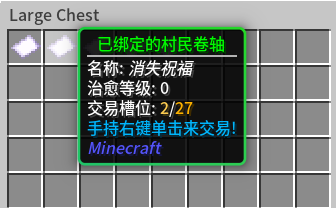

Loading header...
村民卷轴插件
村民卷轴插件为减轻服务器负担提供了帮助，同时也大幅度提高了大宗交易的速度。

已绑定的村民卷轴看起来像这样，拿在主手右键以打开交易栏。
指令一览
无
功能介绍
村民卷轴插件用于将村民的交易内容保留。当村民的交易内容刷新到你满意的时候，你可以手持未绑定的村民卷轴，对准村民使用shift+右键将村民封印到卷轴里，这可以解决村民交易所造成服务器卡顿的问题。该操作不可逆。
被封印的村民不会从之前的治疗和村庄英雄中获益。其交易内容不再能更改。
你可以手持并右键已绑定的村民卷轴以打开其交易项目。主手持有村民卷轴时无法打开容器。
在交易后，可以通过带着卷轴切换服务器的方式立刻为村民卷轴补货，该方法没有冷却时间。
你可以在工厂出生点购买到村民卷轴。
目录